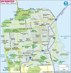

From Wikipedia: San Francisco was founded on June 29, 1776, when colonists from Spain established Presidio of San Francisco at the Golden Gate and Mission San Francisco de Asís a few miles away, all named for St. Francis of Assisi. The California Gold Rush of 1849 brought rapid growth, making it the largest city on the West Coast at the time. San Francisco became a consolidated city-county in 1856.[20] After three-quarters of the city was destroyed by the 1906 earthquake and fire,[21] San Francisco was quickly rebuilt, hosting the Panama-Pacific International Exposition nine years later. In World War II, San Francisco was a major port of embarkation for service members shipping out to the Pacific Theater.[22] It then became the birthplace of the United Nations in 1945.[23][24][25] After the war, the confluence of returning servicemen, massive immigration, liberalizing attitudes, along with the rise of the "hippie" counterculture, the Sexual Revolution, the Peace Movement growing from opposition to United States involvement in the Vietnam War, and other factors led to the Summer of Love and the gay rights movement, cementing San Francisco as a center of liberal activism in the United States. Politically, the city votes strongly along liberal Democratic Party lines. A popular tourist destination,[26] San Francisco is known for its cool summers, fog, steep rolling hills, eclectic mix of architecture, and landmarks, including the Golden Gate Bridge, cable cars, the former Alcatraz Federal Penitentiary, Fisherman's Wharf, and its Chinatown district.
From sfrecpark.org: The San Francisco Recreation and Park Department’s Mission is to provide enriching recreational activities, maintain beautiful parks and preserve the environment for the well-being of our diverse community. In 1866, less than 15 years after America’s first occupation of California, the people of San Francisco came up with the idea of a great public park to mirror one being developed in New York City (Central Park). Under the guidance of engineer William Hammond Hall and gardener John McLaren, Golden Gate Park was established on April 4, 1870, from what essentially was a collection of barren sand dunes.  The Park Commission was established in the same year by the State Legislature, consisting of three members appointed by the Governor. The City took over the Commission in 1900 under the Home Rule Charter. The three Commission members oversaw decades of development as the park slowly stretched from Baker Street (the Panhandle) all the way to the Pacific Ocean. In 1898 the San Francisco Chronicle ran the headline, “A Playground for City Boys,” which unveiled a new concept for the City to create an active playground where “boys can play and expend all the energy they now devote to teasing all the neighboring cats and dogs.” The first public playground was established on school property located at Hyde and Bush Streets in 1898 by the California Club, a women’s organization. In 1904, the people of San Francisco voted for a bond issue for the purchase of Father Crowley Playground and North Beach Playground. The Playground Commission was established soon after in 1907, by amendment to the City Charter. It was hoped that playgrounds would expand throughout the entire city. The name of the Playground Commission was changed to the Recreation Commission in 1932. Over the course of time, Departments were established around both the Recreation Commission and the Park Commission. Because both the Park Commission and the Recreation Commission dealt with maintenance and programming of the same sites, the two merged in 1950, and the Recreation and Park Department was born, managed by the Recreation and Park Commission. The San Francisco Recreation and Park Department now administers more than 220 parks, playgrounds, and open spaces, including two outside the city limits—Sharp Park in Pacifica and Camp Mather in the High Sierras. The system includes 25 recreation centers, nine swimming pools, five golf courses and numerous tennis courts, ball diamonds, soccer fields and other sports venues. Included in the Department’s responsibilities are the Marina Yacht Harbor, the San Francisco Zoo and Lake Merced.